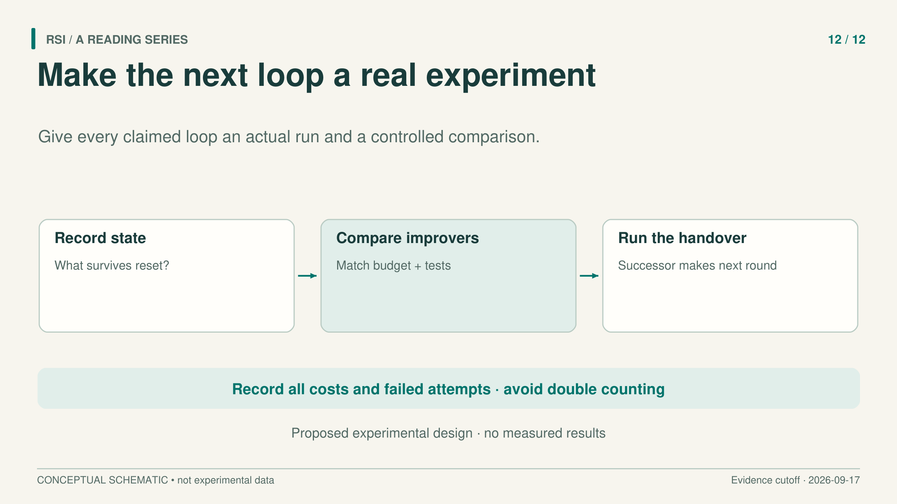
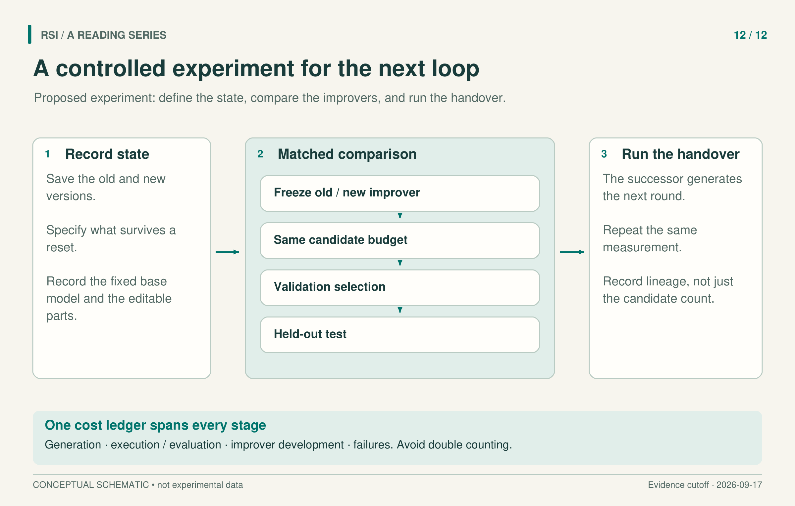

Suppose a coding agent has improved after a period of self-modification. The next experiment should identify what improved: the code solver, its retained experience, the procedure that proposes modifications, or simply the result of spending more attempts.
Here is a proposed experiment for separating those explanations and then testing an actual successor handoff. This series has not run it. The proposal is deliberately narrow: hold the underlying language-model weights fixed, allow specified changes to agent code and its improvement procedure, and evaluate what those changes buy under comparable resources.

This is an experimental design, not a report of measured improvement.
Name the two programs before measuring either
Let the task agent solve coding problems. A separate improver reads experience and proposes changes to that agent. If the system can also change the improver, those edits create candidate successor improvers.
Save an earlier improver, I0, and one developed on prior tasks, I1. Preserve their code, prompts, tools, model identity, and any memory they can access. Record which parts differ. A file diff alone cannot identify the treatment if one version also receives a richer skill library or a different model.
The initial question is specific: given the same starting task agent and a matched search allowance, does I1 produce a better selected task agent on tasks excluded from its earlier development? This tests improvement of the proposal procedure. It does not yet test an endlessly improving sequence.
Hyperagents motivates measuring an improver through the descendants it generates. Its transfer experiment also carries both task and meta components, with initial format failures contributing to the starting score. That makes component control worth building into this proposal from the beginning.
Run the old and new improvers from the same start
Freeze I0 and I1 during this comparison. Give each the same initial task-agent code, permitted tools, development-feedback protocol, and starting memory. Use paired task instances and random seeds where the setup supports them. The improvers may propose different patches; they should not receive different access to evidence.
Give both the same candidate allowance and the same caps on model generation and execution resources. Stop each search when it reaches an applicable cap, and report actual use. Equal candidate counts alone can hide longer generations or more expensive evaluations. Counting only successful candidates can reward a method for making costly invalid attempts.
Repeat the paired comparison with a repetition count and analysis chosen before the main run. Report the distribution of outcomes and uncertainty, including failed searches. A peak from one run is not the same statistic as typical selected performance.
If I1 was originally developed together with a new solver or memory, add component comparisons. Hold the task agent fixed while swapping improvers; hold the improver fixed while swapping the retained state. Report format compliance separately from successful task execution. These comparisons ask whether the benefit follows the component named in the claim.
Matched retries deserve particular attention. For Recuris within-task test-time adaptation on Terminal-Bench 2.1, comparing adaptation with a baseline that also received retries sharply limits what can be attributed to memory; the reported uncertainty includes zero. That does not prove no effect. It shows why a one-try baseline is inadequate for isolating learning in a multi-try system.
Keep selection separate from the final question
Provide a validation pool for selecting each search's candidate. Keep final test tasks outside earlier improver development and current candidate selection. If task families share substantial structure, specify the split at that level rather than relying only on different prompt IDs.
Apply the same selection rule to both searches. Evaluate the selected candidates on the reserved test pool without returning those results to search. Save the full candidate sequence, but report last candidate, best validation candidate, and final selected candidate as distinct objects.
RSIBench-Data makes this distinction concrete: a last candidate below the search peak need not be the checkpoint finally submitted. It also shows why a fresh execution on the same task subset is different from held-out-task evaluation. The proposed experiment separates both execution and task exposure.

The proposed lineage is I1 → I2 → I3, with each accepted improver generating the next. All stages enter the cost record; no measured outcomes are shown.
Decide what an accepted change means
Keep the external acceptance criterion fixed for the first study. Candidates may use permitted self-tests for debugging, but those tests cannot authorize their own promotion. Compare candidate and retained systems through the same external procedure, with tolerances and rejection behavior specified in advance.
When rejecting a coupled policy-and-test change, restore the coupled state. Guo SEAL supplies a concrete example of this design and also its limit: an accepted audit improvement can coincide with worse deployment performance. The proposed gate therefore needs its own error analysis; it is not a deployment guarantee.
An unexpected change to evaluation inputs, scoring, or execution should suspend acceptance until the comparison can be reconstructed. Record the event as part of the outcome, including its cost. If evaluator evolution becomes a research objective, give it a separate protocol with stable reference comparisons instead of silently extending the old score curve.
Make the successor take the next turn
After the frozen comparison, give I1 access to its own permitted implementation and only declared development/validation information. Within the predeclared, charged budget, let I1 propose an edit that produces a named successor improver, I2.
Freeze I1 and I2 for the same descendant-generation comparison on reserved validation tasks, at matched resources, charging these evaluations to the search budget. A fixed external gate uses only development/validation evidence to decide promotion. Sealed final-test results serve reporting alone: they never decide acceptance or enter subsequent development. The gate itself remains outside the editable state.
If accepted, activate I2 and let I2 itself propose I3 under the same rules. Record parents, actual edits, descendants and decisions, including rejected proposals. This I1 → I2 → I3 chain is still our unexecuted design; repeated use of unchanged I1 would not implement it.
HELIX illustrates why that boundary matters: the discussed work materializes model-update data but does not train the updated model. A proposed update step and an executed update need different reporting.
Reserve task pools for later controlled measurements. Predetermine maximum handoffs and resource limits, so stopping does not depend on finding an attractive test curve.
Count the work that made the result possible
Record candidate generation, execution, validation, final measurement, improver development, and failed attempts. Define non-overlapping cost categories so a failed attempt is not charged twice merely because its generation already appears elsewhere. Report model calls, tokens, compute, money, or wall time in their own units rather than treating them as interchangeable.
Dream-RSI motivates the boundary: discovery-agent calls do not include every expense of dreaming, policy development, and execution. A cheaper final solver can still have an expensive discovery process.
Stop when the declared resource limit is reached, when no acceptable successor is found within the search allowance, or when an evaluation-integrity issue prevents a meaningful comparison. Preserve the retained version and report the reason. None of these outcomes should be hidden by restarting the experiment until it succeeds.
If I1 wins at matched resources and the actual I1 → I2 → I3 lineage yields further gains under the same controls, the result supports those tested links. It still does not establish sustained acceleration or improvement in unrelated abilities. If the benefit disappears under component or retry controls, that is also informative: the experiment has located what the original gain actually depended on.
Sources
- Zhang et al., Hyperagents, v1, 2026.
- Yu et al., Recursive Experiential-Working Memory Evolution for Long-Horizon Agent Harnesses, v1, 2026.
- Meng et al., RSIBench-Data, v1, 2026.
- Guo et al., Self-Authored Verification Is Unreliable in Heuristic Self-Improving Agents, v1, 2026.
- Fan et al., HELIX, v1, 2026.
- Zheng et al., Dream-RSI, v1, 2026.
This proposed design adapts a book with a literature cutoff of September 17, 2026. It has not been executed, and no sample size, result, or success rate is asserted.